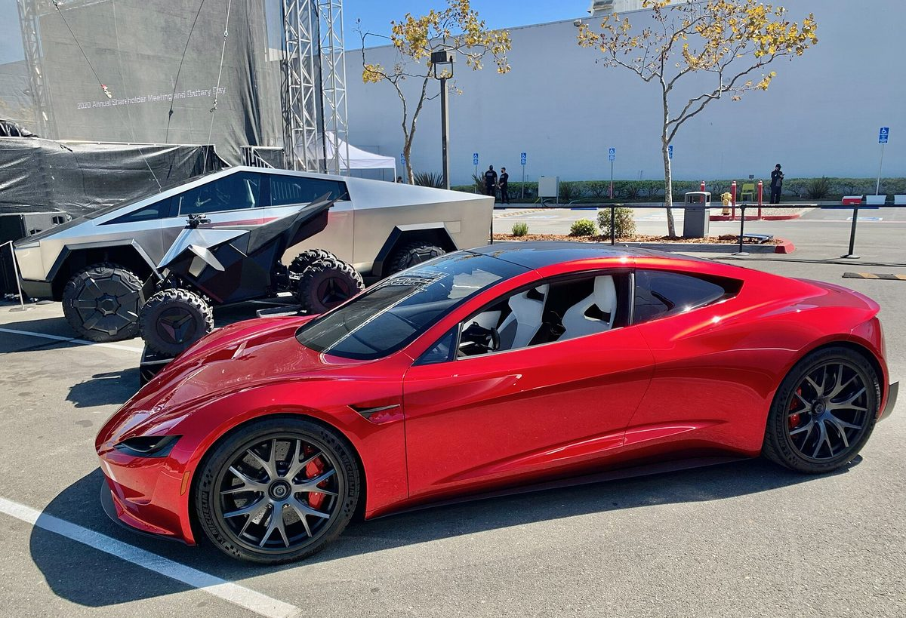

A Roadster that flies, two years from production
"Success is not certain, but excitement is," Musk posted as the stream began.
The white two-seater drove upside down on a ramp using a suction system, turned in the air and landed on built-in thrusters, then jumped a truck and other vehicles, Reuters reported. "This is the culmination of incredible work by Tesla and SpaceX engineers working closely together to make something that you haven't seen in any movie," Musk told the crowd. Range is more than 300 miles, less than half the 2017 promise; no price was given. The invite-only Rocket version is "not approved for public road use," Tesla says.

"Turns out the future does have flying cars," Musk posted after the show. When a post noted that 0.81 seconds "is over 3.3 Gs," he replied, "You're right, we can do better." He thanked Google's Sundar Pichai: "It's such an honor working with incredible engineers" (post), and of the first Roadster, launched on Falcon Heavy in 2018, wrote: "My OG Roadster is still orbiting Mars and Earth." Tesla shares rose 5% in premarket trading Friday, Reuters reported.